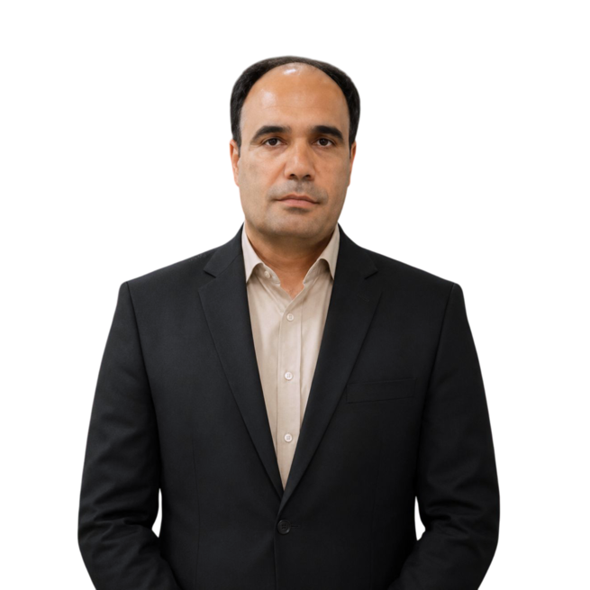
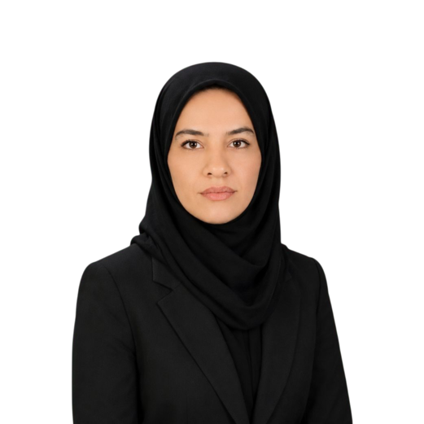
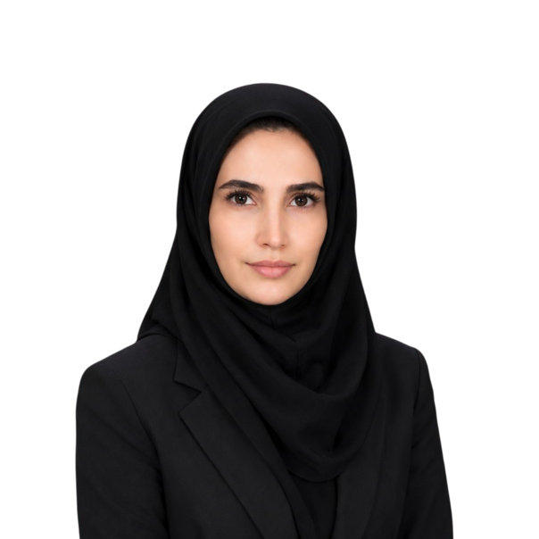
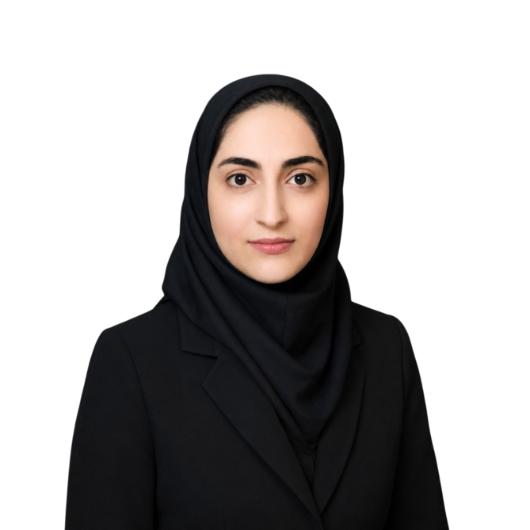
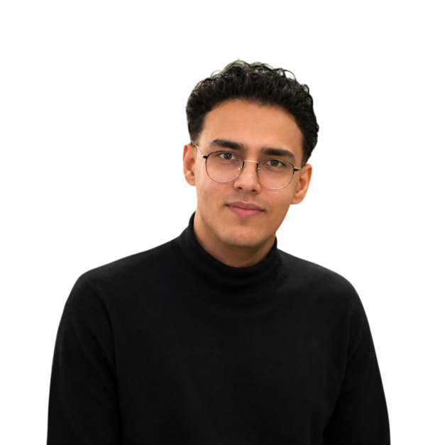
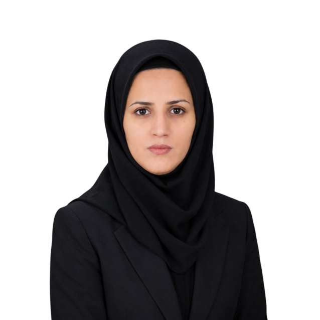
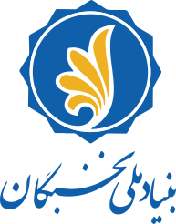

منابع طبیعی
مطالعه و تحلیل مسائل مرتبط با مدیریت پایدار منابع طبیعی و سامانههای محیطی.
پویاب یک تیم پژوهشی تحقیقاتی و مسئلهمحور است که با تکیه بر دانش تخصصی اعضا، روشهای نوین تحلیل و همکاری میانرشتهای، به مطالعه و توسعه راهکارهای علمی در حوزه منابع طبیعی و محیطزیست میپردازد.
پویاب با هدف شکلدهی به یک تیم پژوهشی پویا در حوزه منابع طبیعی شکل گرفته است. تمرکز هسته بر توسعه فعالیتهای علمی، استفاده از ابزارها و روشهای نوین و تبدیل مسائل واقعی محیطی به پرسشهای پژوهشی قابل مطالعه است.
مطالعه و تحلیل مسائل مرتبط با مدیریت پایدار منابع طبیعی و سامانههای محیطی.
پژوهش در زمینه فرآیندهای آبخیز، سیلاب، فرسایش و راهکارهای مدیریتی.
استفاده از دادههای محیطی، مکانی و زمانی برای شناخت الگوها و پشتیبانی از تصمیمگیری.
بررسی ظرفیت روشهای هوشمند و مدلهای دادهمحور برای مسائل پژوهشی منتخب.
تحلیل مکانی و استخراج اطلاعات از دادههای جغرافیایی و سنجش از دور.
تبدیل یافتههای علمی به خروجیهایی که بتوانند در حل مسائل واقعی مورد استفاده قرار گیرند.
دکتر علیاصغر ذوالفقاری، دانشیار گروه بیابانزدایی و رئیس دانشکده کویرشناسی دانشگاه سمنان است. وی دارای مدرک کارشناسی از دانشگاه گیلان، کارشناسی ارشد از دانشگاه صنعتی اصفهان و دکتری از دانشگاه تهران است. حوزههای تخصصی و پژوهشی ایشان شامل بیابانزدایی، خاک و آب، فرسایش خاک، هیدرولوژی، تغییر اقلیم، سنجش از دور و GIS، مدلسازی محیطی و کاربرد یادگیری ماشین در علوم منابع طبیعی است.
ایشان سابقه فعالیتهای آموزشی، پژوهشی و اجرایی متعدد در دانشگاه سمنان داشته و در انتشار مقالات علمی و اجرای طرحهای پژوهشی در حوزه منابع طبیعی و محیطزیست فعال است.

استاد راهبر
ترکیبی از پژوهشگران و دانشجویان متخصص که در مسیر تحقیق و توسعه در کنار یکدیگر فعالیت میکنند.

دانشجوی مقطع دکتری مدیریت و کنترل بیابان
مشاهده رزومه
دانشجوی مقطع دکتری مدیریت و کنترل بیابان
مشاهده رزومه
دانشجوی مقطع دکتری مدیریت و کنترل بیابان
مشاهده رزومه
فارغ التحصیل کارشناسی رشته مهندسی طبیعت
مشاهده رزومه
فارغ التحصیل مقطع دکتری رشته مدیریت و کنترل بیابان
مشاهده رزومهپویاب تلاش میکند فرآیند پژوهش را از مسئله واقعی آغاز کند و با استفاده از داده، روش علمی و ابزارهای نوین به خروجی قابل تفسیر و قابل استفاده برسد.
شناخت مسئله و تبدیل آن به پرسش پژوهشی مشخص.
گردآوری، آمادهسازی و ارزیابی دادههای مورد نیاز.
بهکارگیری روشهای آماری، مکانی و دادهمحور متناسب با مسئله.
بررسی کیفیت نتایج و مقایسه روشها برای افزایش اطمینان.
تبدیل نتایج به بینش و راهکار قابل استفاده.
پیوند دادن خروجی پژوهش با نیازهای واقعی و تصمیمگیری.
راهنمای دسترسی به جزئیات پروژه های تیم.
شبکه همکاری پویاب در طول توسعه هسته بروزرسانی خواهد شد.

بنیاد ملی نخبگانهویت پویاب با یک پروژه آغاز نمیشود و با یک پروژه هم پایان نمییابد.
افزایش دامنه پروژههای مسئلهمحور در حوزه منابع طبیعی و محیطزیست.
افزایش همکاری میانرشتهای و پیوند دانش تخصصی اعضای جدید با هسته.
حرکت از تولید نتیجه علمی به سمت خروجیهای کاربردی و قابل استفاده.
هسته پژوهشی پویاب · پژوهش، نوآوری و حرکت از مسئله به راهکار